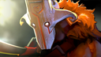

Dota 2 — многопользовательская командная компьютерная игра в жанре MOBA, разработанная и изданная корпорацией Valve.
Игра изображает сражение на карте особого вида; в каждом матче участвуют две команды по пять игроков, управляющих разными «героями» — персонажами с различными наборами способностей и характеристиками.
Для победы в матче команда должна уничтожить особый объект — «крепость», принадлежащий вражеской стороне, и защитить от уничтожения собственную «крепость».
Разработка игры началась в 2009 году, когда компания Valve приняла на работу основного разработчика DotA — IceFrog, а летом 2010 года подала заявку на регистрацию этой торговой марки.
13 октября 2010 года на игровом портале Game Informer игра была анонсирована к выходу в 2011 году.
15 августа 2011 года в официальном блоге был опубликован трейлер к игре.
Dota 2 вышла в июле 2013 года после того, как два года находилась в стадии бета-тестирования.
Изначально Dota 2 была выпущена на игровом движке Source, после чего в 2015 году была портирована на Source 2, став первой работающей на нём игрой.
В Dota 2 предусмотрена возможность создавать пользовательские режимы игры, оформление карты и косметические предметы для героев, после чего добавить их в Dota 2 при помощи Steam Workshop.
Dota 2 является одной из наиболее популярных игр в Steam и получила в целом положительные отзывы критиков за игровой процесс, качество производства и сохранение положительных сторон своей предшественницы.
Среди основных недостатков игры была отмечена сложность обучения.
| Имя персонажа | Внешний вид | Краткое описание |
|---|---|---|
| Pudge | | Притягивает врагов своим крюком |
| Phantom Assasin | | Прыгает к врагам и наносит удары |
| Sniper | | Обстреливает врагов издалека |
| Invoker | | Умело комбинирует заклинания |
| Juggernaut |  | Разрубает врагов точными взмахами меча |
| Lion | | Крадёт вражескую ману |